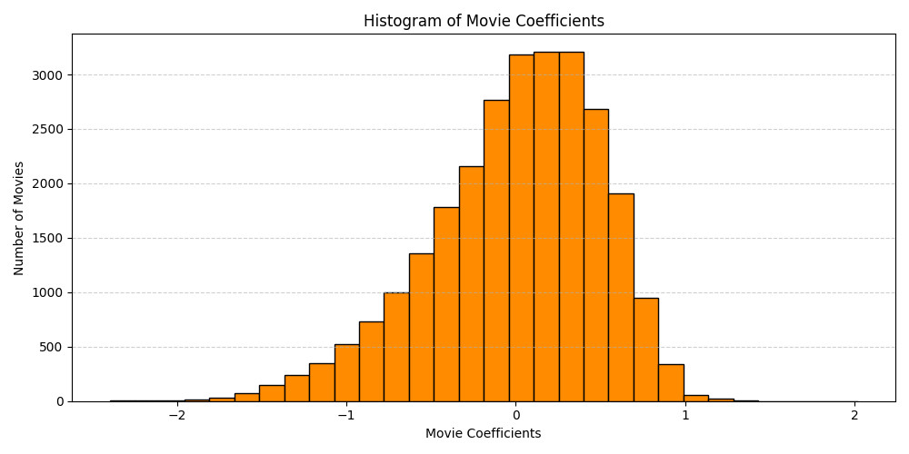
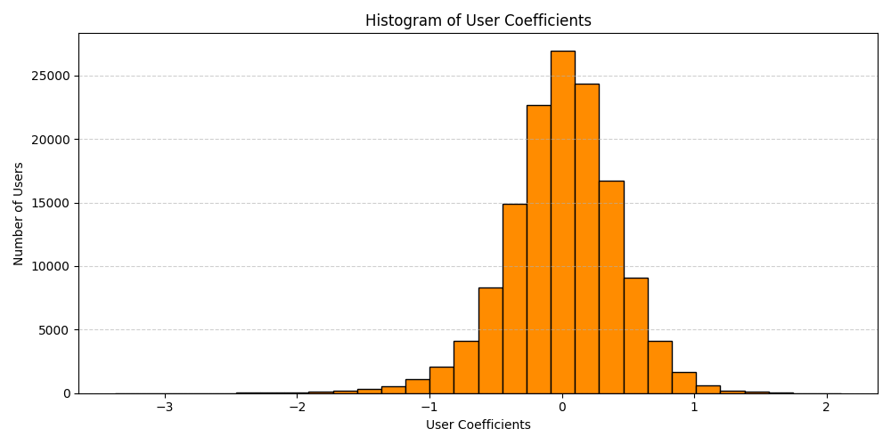
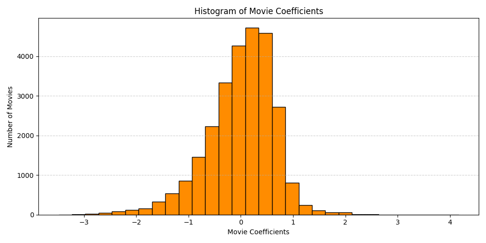

Say we want to take user ratings of movies and rank them. Some previous approaches try to rank movies by accounting for sample sizes and confidence intervals, but they didn’t consider biases of users who were doing the ratings. Indeed, if User A just happens to indiscriminantly love movies and rate them all highly, and also happens to be the only person who rated Movie 1, then that movie might currently be overrated. We can apply a linear model to account for raters’ biases to uncover what a movie’s rating would be after adjusting for its raters. This is an example of a non-personalzed recommendation system. Let’s start by looking at the highest rated movies from the MovieLens dataset on Kaggle.
Code
# import the data# ratings doesn't include movie names so merge with ids to get namesratings = pd.read_csv("archive/rating.csv", parse_dates=['timestamp'])ids = pd.read_csv("archive/movie.csv")ratings = pd.merge(ratings, ids, on='movieId', how='left')# Find each movie's mean ratingavg_ratings = ratings.groupby(['movieId', 'title'])['rating'].agg( avg_rating='mean', rating_count='count')avg_ratings.sort_values(by ='avg_rating', ascending=False, inplace =True)avg_ratings.head()
movieId
Title
Mean Rating
Number of Ratings
117314
Neurons to Nirvana (2013)
5.0
1
117418
Victor and the Secret of Crocodile Mansion (2012)
5.0
1
117061
The Green (2011)
5.0
1
109571
Into the Middle of Nowhere (2010)
5.0
1
109715
Inquire Within (2012)
5.0
1
After accounting for who the raters of these films were, we’ll have a better idea of what they might be rated. There are a lot of approaches we can take with the linear model, such as filtering to only include movies with a certain number of ratings.
We can define our variables as
\(r_{ij}\) is the rating that person \(i\) gave (or would give) movie \(j\)
Our statistical model is then
\[r_{ij} = \mu + \alpha_i + \beta_j\]
And we can use ordinary least squares to estimate the \(\alpha_i\) and \(\beta_j\). Here,
\(\mu\) is the overall (global) mean
\(\alpha_i\) is the “effect” of user \(i\), which measures how much above the mean user \(i\) tends to rate movies after considering movie effects, and
\(\beta_j\) is the “effect” of movie \(j\), which measures how much above the mean movie \(j\) tends to score, after considering user effects.
Once the model is fit, we can look at \(\beta_j\) to determine which movies are scoring the highest after accounting for the users.
Mathematically, we’re finding the optimal parameters \(\alpha_i\) and \(\beta_j\) that minimize the mean squared error plus a regularization term:
The regularization here is an \(L^2\) or ridge regression, and alternatively, one could incorporate LASSO regularization. The hyperparameter \(\lambda\) can be fine tuned, which we’ll discuss in another post; here it’s taken to be \(\lambda = 1\).
Code
# setup and fit the model# this cell will likely take a while to run, there > 20,000 parameters to fit in this optimizationohe = OneHotEncoder(handle_unknown='ignore', sparse_output=True)model = make_pipeline( ohe, Ridge(alpha=1.0) # or Lasso. This is lambda in the equation above)model.fit(ratings[['userId','movieId']], ratings['rating'])encoder = model.named_steps['onehotencoder']feature_names = encoder.get_feature_names_out(['userId', 'movieId'])coef = model.named_steps['ridge'].coef_intercept = model.named_steps['ridge'].intercept_
Code
# Extract the coefficients alpha_i and beta_jcoef_df = pd.DataFrame({'feature': feature_names,'coefficient': coef}).sort_values(by='coefficient', ascending=False)
Code
# Extract only the users' coefficients, alpha_iuser_df = coef_df[coef_df['feature'].str.startswith('userId')]user_df.head()
Code
# Extract only the movies' coefficients, beta_jmovie_df = coef_df[coef_df['feature'].str.startswith('movieId')]movie_df.head()
Code
# prepare the df for merging to get movie namesmovie_df['movieId'] = movie_df['feature'].str.split('_', expand=True)[1].astype(int)movie_df.head()
Code
# merge to get movie namesmerged = movie_df.merge(mean_ratings, on='movieId', how='left')
Code
# Get adjusted ratings by not incorporating any alpha_i, just taking mu + beta_jglobal_mean = ratings['rating'].mean()merged['Adjusted Rating'] = global_mean + merged['coefficient']
Code
# find which movies have the largest coefficientsmerged.sort_values(by ='coefficient', ascending=False, inplace =True)merged[['title', 'coefficient', 'avg_rating', 'rating_count']].head()
Title
Adjusted Rating
Coefficient
Mean Rating
Number of Ratings
0
Marihuana (1936)
5.547
2.021
5.000
1
1
Always for Pleasure (1978)
5.070
1.544
5.000
1
2
Supermarket Woman (Sûpâ no onna) (1996)
4.956
1.431
4.750
2
3
Great White Silence, The (1924)
4.861
1.336
4.500
4
4
Welfare (1975)
4.835
1.309
4.417
6
5
I Belong (Som du ser meg) (2012)
4.815
1.289
4.750
2
6
No Distance Left to Run (2010)
4.812
1.287
5.000
1
7
Hot Pepper (1973)
4.808
1.282
4.250
2
8
For Neda (2010)
4.798
1.272
4.500
5
9
That Day, on the Beach (Hai tan de yi tian) (1983)
4.786
1.261
4.500
2
It looks like we have the same issue as before, where some movies with very few ratings are still dominating the ratings. If we filter to only include movies with at least 50 ratings, we see a list that closely resembles the top 10 movies if we looked at the mean rating. First, our list of top 10 adjusted ratings:
Title
Adjusted Rating
Coefficient
Mean Rating
Number of Ratings
45
Shawshank Redemption, The (1994)
4.609
1.083
4.447
63366
61
Godfather, The (1972)
4.558
1.032
4.365
41355
69
Paths of Glory (1957)
4.535
1.009
4.233
3568
79
Usual Suspects, The (1995)
4.525
0.999
4.334
47006
85
Seven Samurai (Shichinin no samurai) (1954)
4.520
0.994
4.274
11611
87
Sunset Blvd. (a.k.a. Sunset Boulevard) (1950)
4.519
0.993
4.257
6525
89
Third Man, The (1949)
4.518
0.992
4.246
6565
90
Decalogue, The (Dekalog) (1989)
4.516
0.991
4.174
402
92
Lives of Others, The (Das leben der Anderen) (2006)
4.514
0.989
4.235
5720
95
Fawlty Towers (1975-1979)
4.512
0.986
4.128
230
Now compare this with the list of the top 10 movies with at least 50 reviews, sorted by mean rating:
movieId
Title
Mean Rating
Number of Ratings
318
Shawshank Redemption, The (1994)
4.447
63366
858
Godfather, The (1972)
4.365
41355
50
Usual Suspects, The (1995)
4.334
47006
527
Schindler’s List (1993)
4.310
50054
1221
Godfather: Part II, The (1974)
4.276
27398
2019
Seven Samurai (Shichinin no samurai) (1954)
4.274
11611
904
Rear Window (1954)
4.271
17449
7502
Band of Brothers (2001)
4.263
4305
912
Casablanca (1942)
4.258
24349
922
Sunset Blvd. (a.k.a. Sunset Boulevard) (1950)
4.257
6525
Half the movies appear on both lists, but then a handful differ. It’s interesting to see some international films rise in the adjusted rankings; I wonder if this is partially due to cultural norms when it comes ratings, which is well-summarized in the meme at the top that I took from the lectures from my Bayesian stats book club. In more words, are those movies/shows being rated by people who tend to assign lower ratings, leading them to be underrated? There are someanecdotal examples of people experiencing cultural differences in ratings, and others have explored the subject quantitatively, noticing differences across genders as well.
One more thing I’d like to look at is which movies have the largest gaps between their unadjusted and adjusted ratings, i.e. the largest residuals. We can think of these as the most underrated (or overrated) movies, consequences of being rated by many folks who consistently rate much lower (or higher) than the average rater. Let’s start with some underrated ones:
Captive Women (1000 Years from Now) (3000 A.D.) (1952)
0.5
2.941
2.441
1
-0.585
23466
Beethoven’s 5th (2003)
0.5
2.918
2.418
1
-0.607
23461
Beethoven’s Treasure Tail (2014)
0.5
2.918
2.418
1
-0.607
23455
Alpha and Omega 2: A Howl-iday Adventure (Alpha & Omega 2) (2013)
0.5
2.918
2.418
1
-0.607
23465
Mr. Troop Mom (2009)
0.5
2.918
2.418
1
-0.607
Again, movies with only one rating comprise this list. These movies were all rated half of a star by a single user, and their respective movie coefficients (\(\beta_j\)) aren’t too large in magnitude, so the difference in ratings is high. Even if we try to do the same analysis with movies with at least 50 ratings, they’re not too recognizable, but I’d guess these are somewhat underrated due to cultural rating norms.
Title
Average Rating
Adjusted Rating
Delta
Number of Ratings
Movie Coefficient
8622
As Tears Go By (Wong gok ka moon) (1988)
3.192
3.806
0.614
52
0.281
4389
Merchant of Four Seasons, The (Händler der vier Jahreszeiten) (1972)
3.406
4.009
0.603
64
0.483
15770
Pellet (Bola, El) (2000)
2.900
3.473
0.573
50
-0.053
11091
Separation, The (Séparation, La) (1994)
3.127
3.690
0.563
51
0.165
1299
Autumn Afternoon, An (Sanma no aji) (1962)
3.669
4.228
0.559
71
0.702
12790
See the Sea (1997)
3.054
3.611
0.557
56
0.086
6203
Dames du Bois de Boulogne, Les (Ladies of the Bois de Boulogne, The) (Ladies of the Park) (1945)
3.357
3.914
0.557
70
0.389
1728
Eureka (Yurîka) (2000)
3.630
4.185
0.555
96
0.660
8676
Lili Marleen (1981)
3.250
3.804
0.554
56
0.278
15663
Devils on the Doorstep (Guizi lai le) (2000)
2.926
3.479
0.553
61
-0.046
We see similar results when we look at the most overrated:
Title
Average Rating
Adjusted Rating
Delta
Number of Ratings
Movie Coefficient
7696
Boys Diving, Honolulu (1901)
5.0
3.849
-1.151
1
0.324
7698
Ella Lola, a la Trilby (1898)
5.0
3.849
-1.151
1
0.324
7697
Barchester Chronicles, The (1982)
5.0
3.849
-1.151
1
0.324
7691
Keeping the Promise (Sign of the Beaver, The) (1997)
5.0
3.849
-1.151
1
0.324
7695
Boy Meets Boy (2008)
5.0
3.849
-1.151
1
0.324
7692
Oranges (2004)
5.0
3.849
-1.151
1
0.324
7693
Best of Ernie and Bert, The (1988)
5.0
3.849
-1.151
1
0.324
7694
Prom Queen: The Marc Hall Story (2004)
5.0
3.849
-1.151
1
0.324
7699
Junior Prom (1946)
5.0
3.849
-1.151
1
0.324
7700
Turkish Dance, Ella Lola (1898)
5.0
3.849
-1.151
1
0.324
Looking at the most overrated movies with at least 50 reviews, we notice something interesting:
Title
Average Rating
Adjusted Rating
Delta
Number of Ratings
Movie Coefficient
23938
Big Green, The (1995)
2.855
2.858
0.003
956
-0.668
16408
Stefano Quantestorie (1993)
3.439
3.441
0.002
57
-0.085
15076
Captives (1994)
3.508
3.507
-0.001
181
-0.018
25637
Gordy (1995)
2.531
2.528
-0.003
439
-0.997
23952
Man of the House (1995)
2.871
2.856
-0.015
1181
-0.669
22917
Homeward Bound II: Lost in San Francisco (1996)
3.002
2.984
-0.018
2430
-0.542
21642
Sunset Park (1996)
3.135
3.105
-0.031
251
-0.421
13566
Talking About Sex (1994)
3.608
3.578
-0.031
106
0.052
25276
Santa with Muscles (1996)
2.666
2.625
-0.041
148
-0.901
19234
Lotto Land (1995)
3.328
3.279
-0.049
58
-0.247
It’s interesting that there are only eight movies with at least 50 ratings and with a negative “Delta” between their average and adjusted ratings. I’m curious what’s going on here.. if it’s truly a facet of the distribution of movie ratings, or if it’s due to the analysis and regularization, or what. To evaluate on the latter, the mean of all the movies is about \(3.53\), so there’s a lot more room for a movie to be rated below average as opposed to above average. The \(L^2\) regularization prevents the Movie and User Coefficients from becoming too large, so the estimated ratings will be closer to the mean, leading to larger deltas for poorly rated movies than for highly rated films. Looking at the distribution of \(\alpha\)s, \(\beta\)s, and the Deltas, we see this to be the case.
 
While the User Coefficients (\(\alpha_i\)) appear normally distributed, the Movie Coefficients (\(\beta_j\)) are left-skewed, with more large negative values compared to large positive values. I expect things to be more balanced (but perhaps not generalize as well) if we don’t use regularization.
Code
# setup and fit the model# this cell will likely take a while to run, there > 20,000 parameters to fit in this optimizationohe = OneHotEncoder(handle_unknown='ignore', sparse_output=True)model = make_pipeline( ohe, Ridge(alpha=0.0) # This being 0 removes the regularization)model.fit(ratings[['userId','movieId']], ratings['rating'])encoder = model.named_steps['onehotencoder']feature_names = encoder.get_feature_names_out(['userId', 'movieId'])coef = model.named_steps['ridge'].coef_intercept = model.named_steps['ridge'].intercept_
Movies that have few total ratings still dominate the leaderboard, so we still want to filter. Here are the top underrated and overrated movies with at least 50 ratings according to this non-regularized approach. For the overrated, we still see the same phenomenon, with there being very few movies making the list.
Title
Average Rating
Adjusted Rating
Delta
Number of Ratings
Movie Coefficient
9332
As Tears Go By (Wong gok ka moon) (1988)
3.192
3.826
0.634
52
0.301
5466
Merchant of Four Seasons, The (Händler der vier Jahreszeiten) (1972)
3.406
4.031
0.624
64
0.505
15647
Pellet (Bola, El) (2000)
2.900
3.485
0.585
50
-0.041
2312
Autumn Afternoon, An (Sanma no aji) (1962)
3.669
4.253
0.584
71
0.728
11573
Separation, The (Séparation, La) (1994)
3.127
3.708
0.581
51
0.183
3930
I Hired a Contract Killer (1990)
3.548
4.127
0.579
52
0.602
7291
Dames du Bois de Boulogne, Les (Ladies of the Bois de Boulogne, The) (Ladies of the Park) (1945)
3.357
3.935
0.578
70
0.409
2813
Eureka (Yurîka) (2000)
3.630
4.206
0.575
96
0.680
13082
See the Sea (1997)
3.054
3.626
0.572
56
0.100
9436
Lili Marleen (1981)
3.250
3.821
0.571
56
0.296
Title
Average Rating
Adjusted Rating
Delta
Number of Ratings
Movie Coefficient
23011
Big Green, The (1995)
2.855
2.865
0.010
956
-0.661
16292
Stefano Quantestorie (1993)
3.439
3.445
0.006
57
-0.081
15071
Captives (1994)
3.508
3.513
0.004
181
-0.013
24806
Gordy (1995)
2.531
2.532
0.002
439
-0.993
23031
Man of the House (1995)
2.871
2.863
-0.009
1181
-0.663
21995
Homeward Bound II: Lost in San Francisco (1996)
3.002
2.989
-0.013
2430
-0.536
13786
Talking About Sex (1994)
3.608
3.585
-0.024
106
0.059
20839
Sunset Park (1996)
3.135
3.109
-0.026
251
-0.416
24440
Santa with Muscles (1996)
2.666
2.624
-0.041
148
-0.901
18757
Lotto Land (1995)
3.328
3.279
-0.048
58
-0.246
Finally, here’s the distribution of the Movie Coefficients (\(\beta_j\)) under the non-regularized approach. We can see it’s more spread out and balanced, as expected.

We could conduct many hypothesis tests and pare the model down to solely those parameters that appear to be statistically significant, but I’ll save that analysis for another time.
Further approaches and questions
Stay tuned for future posts on other recommender systems where I’ll answer questions such as
How does one select the hyperparameter \(\lambda\)?